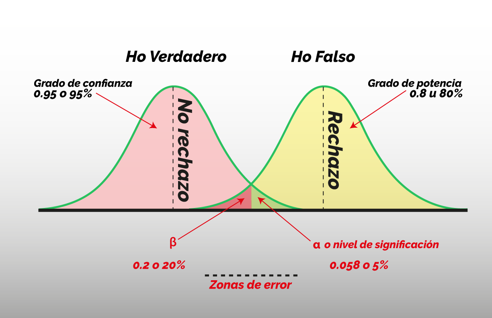
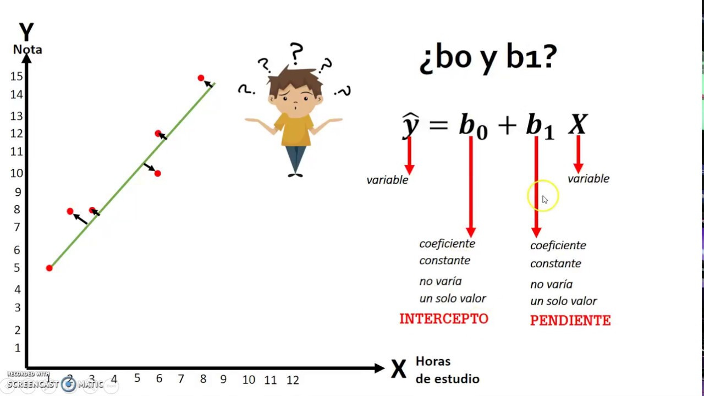

Desarrollo de contenidos por Parcial
Parcial 1
Temas: Análisis exploratorio de datos, Teoría de probabilidades, Distribuciones de Probabilidad
Ir a Parcial 1Desarrollo de habilidades para el análisis exploratorio de datos e interpretación de resultados obtenidos empleando herramientas de la estadística descriptiva, la teoría de probabilidades y las principales distribuciones de probabilidades discreta y continua.

Parcial 2
Temas: Tipos de Muestreo, Prueba de Hipotesis para 1 muestra, 2 muestras, Prueba de hipotesis para 1 y 2 proporciones
Ir a Parcial 2El muestreo y las pruebas de hipótesis son herramientas clave en estadística. El muestreo permite estudiar una parte representativa de la población, mientras que las pruebas de hipótesis ayudan a tomar decisiones basadas en datos, ya sea comparando una o dos muestras, o analizando proporciones.

Parcial 3
Temas: ANOVA, Regresión Lineal y Multiple, Métodos no Paramétricos: análisis de datos por rango, ji cuadrada
Ir a Parcial 3Los métodos estadísticos como ANOVA, regresión lineal y múltiple, y técnicas no paramétricas como el análisis por rangos y la prueba ji cuadrada, permiten analizar datos para identificar relaciones, diferencias y patrones. Estos enfoques se aplican según el tipo de variable y los supuestos del modelo, facilitando decisiones informadas en estudios científicos y técnicos.